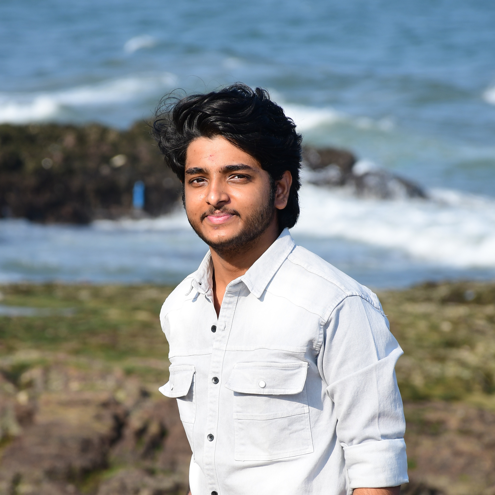

I am a third-year Electronics & Communication Engineering student passionate about RTL Design, FPGA implementation, Logic Synthesis, Static Timing Analysis and the complete RTL-to-GDSII flow. I am building practical VLSI projects while learning Yosys, OpenSTA and OpenROAD.

I am an Electronics and Communication Engineering (ECE) student with a strong interest in VLSI Design, RTL Design, Physical Design, and Computer Architecture. I have a solid foundation in Digital Electronics, CMOS Technology, Verilog HDL, C/C++, and Data Structures, along with a good understanding of the complete RTL-to-GDSII design flow. My technical skills include RTL design and verification, FPGA implementation, RISC-V processor design, and digital system development. I am familiar with Physical Design concepts such as Floorplanning, Placement, Clock Tree Synthesis (CTS), Routing, Static Timing Analysis (STA), and Physical Verification. Through academic projects, I have gained hands-on experience in designing, simulating, and debugging digital hardware using Verilog and FPGA platforms. I am passionate about semiconductor technology and continuously expanding my knowledge in ASIC Design, Physical Design, and Digital IC Design.
A complete 32-bit RV32I RISC-V processor designed and implemented in Verilog HDL, featuring RTL architecture. The project includes functional simulation and verification using testbenches, successful deployment on the Basys3 FPGA board for real-time hardware validation through execution of program of Fibonacci sequence.
GitHubReal-time UART communication system using Verilog on the Basys3 FPGA. The project demonstrates UART transmission, FPGA memory buffering, 7-segment display visualization, and hardware-software integration through USB-UART communication for real-time data transfer and debugging.
GitHubA complete 16-bit BFloat16 floating-point processor designed and implemented in Verilog HDL, featuring modular RTL architecture, simulation verification, and FPGA deployment capabilities. The project includes successful implementation of arithmetic operations on real hardware2-bit RV32I processor implemented in Verilog with simulation and FPGA deployment.
GitHubA 32-bit 5-stage pipelined RISC-V processor implemented in Verilog and deployed on the Basys3 FPGA. The design includes pipeline registers, forwarding, and hazard detection, and successfully executes a Fibonacci program to demonstrate efficient instruction-level parallelism and improved performance over a single-cycle architecture.
GitHubDigital clock implemented in Verilog on the Basys3 FPGA board. A clock divider converts the 100 MHz onboard clock to a 1 Hz signal to drive seconds counting, and the time is displayed on the Basys3 seven-segment display.
GitHubMy Verilog solutions to HDLBits problems, covering digital logic design concepts such as combinational circuits, sequential logic, finite state machines, counters, and arithmetic circuits.
GitHubI'm actively looking for internships and opportunities in RTL Design, FPGA Design and Physical Design. Feel free to reach out.